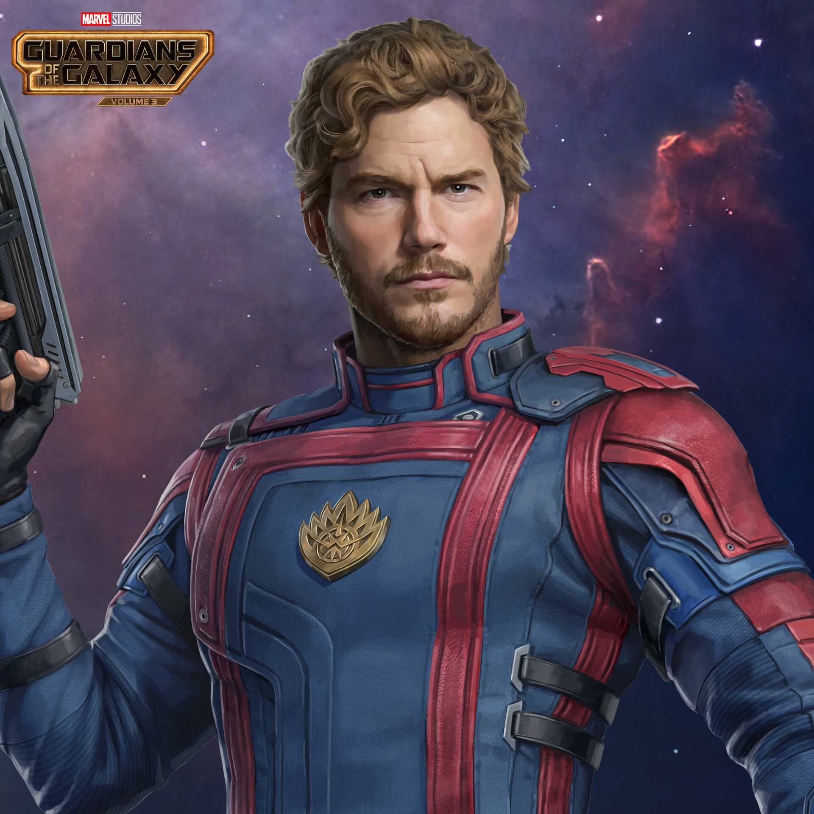
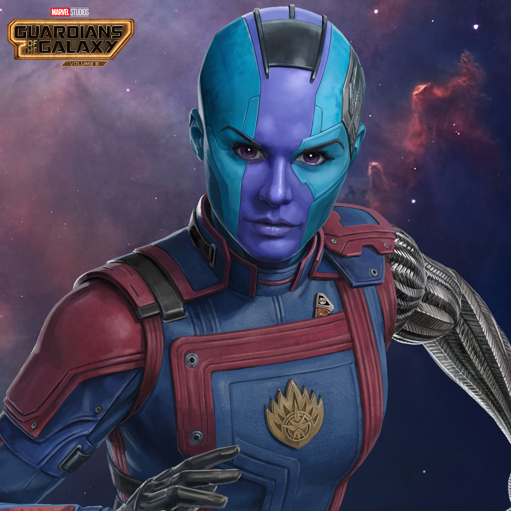
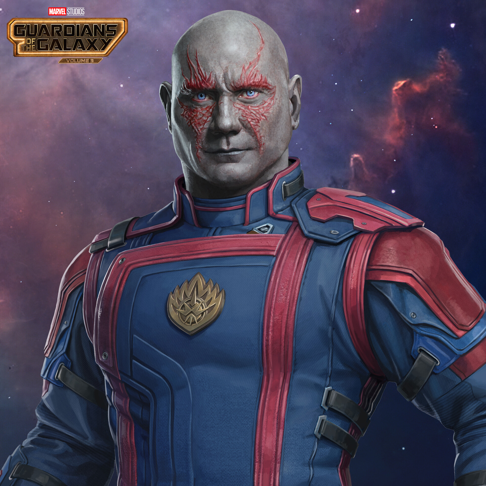
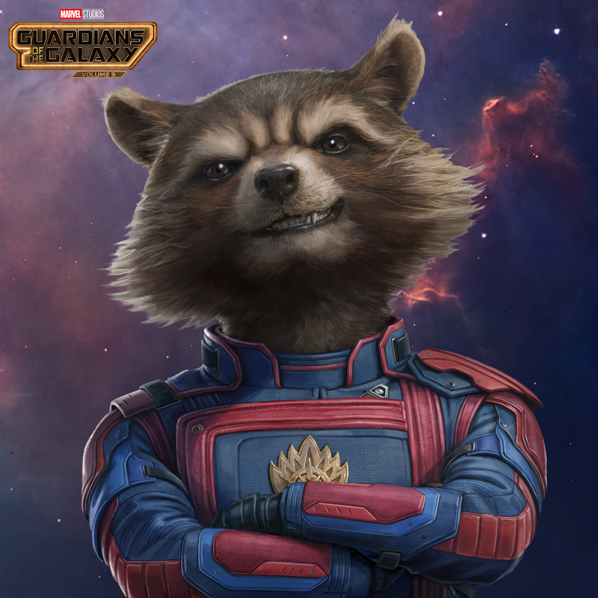
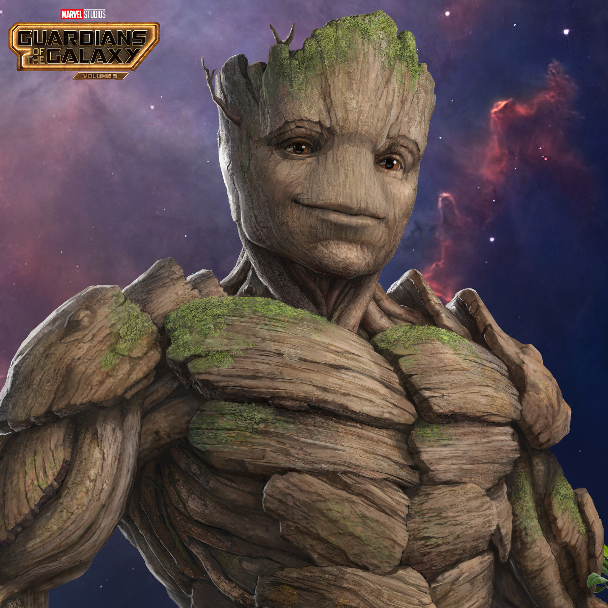
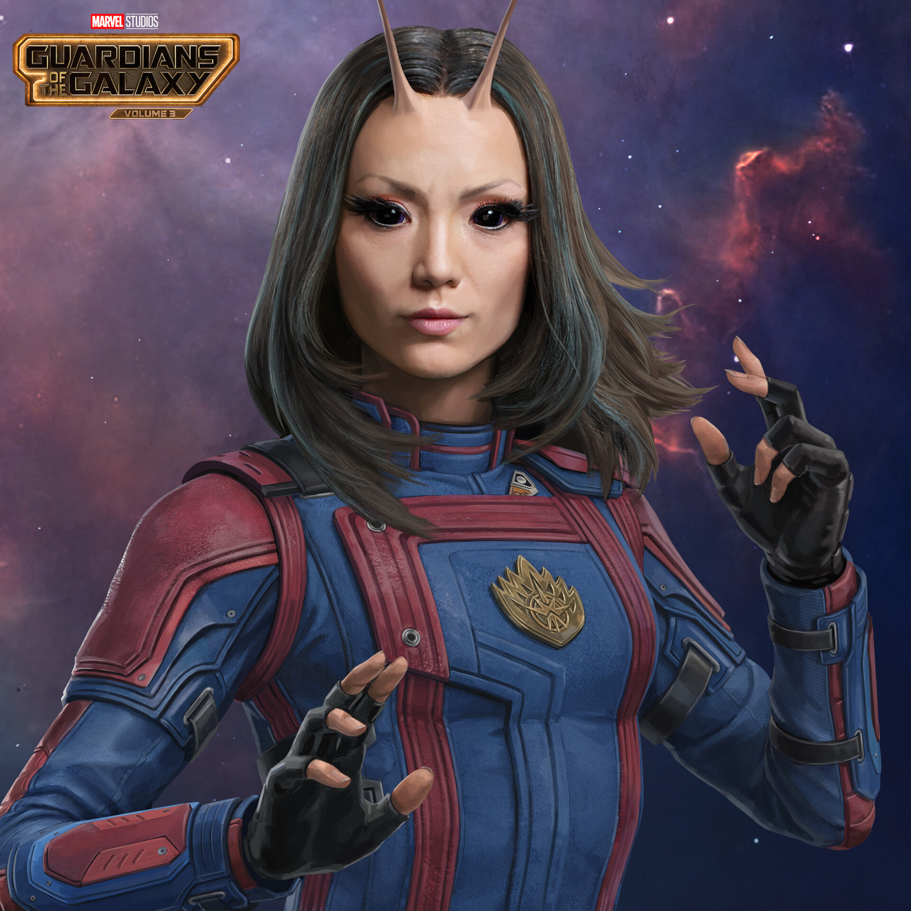

STAR-LORD
Leader of the Guardians. A human raised in space, he’s a mix of sarcasm, ego, and a genuinely good heart. He loves 80s music and always tries to do the right thing… even if it gets messy.

Leader of the Guardians. A human raised in space, he’s a mix of sarcasm, ego, and a genuinely good heart. He loves 80s music and always tries to do the right thing… even if it gets messy.

A cybernetically enhanced warrior. Cold, disciplined, and shaped by a harsh past, she gradually develops a stronger sense of empathy and connection with others.

A powerful warrior driven by vengeance. He takes everything literally, which leads to unintentionally funny moments. Despite that, he’s brave, loyal, and deeply emotional.

A genetically enhanced raccoon and weapons expert. Highly intelligent, sarcastic, and impulsive. Beneath his tough attitude, he carries deep emotional scars and is fiercely loyal.

I AM GROOT

An empath who can feel and influence emotions. She’s innocent, kind, and socially awkward, but surprisingly strong and insightful when it matters.